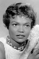

Country:United States, 90 minutes
Spoken languages:English
Genres:Action, Thriller
Director(s):Arthur Marks
Writer(s):Orville H. Hampton
Video Codec:Unknown
Number: 2875


Certification:R
Storyline:
Friday Foster, a magazine photographer, goes to Los Angeles International airport to photograph the arrival of Blake Tarr, the richest black man in America. Three men attempt to assassinate Tarr. Foster photographs the melee and is plunged into a web of conspiracy involving the murder of her childhood friend, a US senator, and a shadowy plan called "Black Widow".
Cast: 


Medium: Original DVD,
Comments: w/ Coffy
Loaned: No
Aspect ratio: Unknown